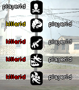

SendDeathMessageToPlayer
From SA-MP Wiki

The 5 most recent kills are shown on the right side of players' screens. Pressing F9 will hide/show the list.
| This Function was added in SA-MP 0.3z R2-2 and will not work in earlier versions! |
Description:
Adds a death to the 'killfeed' on the right-hand side of the screen for a single player.
(playerid, killer, killee, weapon)
| playerid | The ID of the player to send the death message to. |
| killer | The ID of the killer (can be INVALID_PLAYER_ID). |
| killee | The ID of the player that died. |
| weapon | The reason (not always a weapon) for the victim's death. Special icons can also be used (ICON_CONNECT and ICON_DISCONNECT). |
Return Values:
- 1: The function was executed successfully.
- 0: The function failed to execute.
Example Usage:
public OnPlayerDeath(playerid, killerid, reason) { // Sends a death message to "playerid" shows that "killerid" killed "playerid" for "reason" SendDeathMessageToPlayer(playerid, killerid, playerid, reason); return 1; }
[edit]
Related Functions
The following functions may be helpful as they relate to this function in one way or another.
- SendDeathMessage: Add a kill to the death list.
[edit]
Related Callbacks
The following callbacks might be useful, as they're related to this function in one way or another.
- OnPlayerDeath: Called when a player dies.

{kind=link}